This document takes a new operator from an empty machine to a running OGL Cortex fleet, then covers daily operation, safe changes and the ship chain. Internals are in 01-core-architecture.md and 02-execution-engine.md. Settings are in 03-configuration-registry.md. Guards are in 04-failsafe-boundary-log.md.
The command-line tool is named cortextos.
Every cortextos command below was checked against the CLI's --help output. Commands from the OGL layer are marked as such and live in this repo's harness/ folder (harness/tools/ship.sh, harness/install.sh). The pentest gate is harness/security/cortex_pentest_gate.py.
Terms
- Instance: one runtime state folder,
$CTX_ROOT=~/.cortextos/<instance>. The default instance id isdefault.$CORTEX_HOMEis the framework checkout (for example~/cortextos). - Org: a group of seats that share a knowledge base, tasks and approvals. Lives in the framework checkout at
orgs/<org>/. - Seat: one agent, in
orgs/<org>/agents/<seat>/. - Daemon: the Node process (
dist/daemon.js) that keeps every seat's Claude Code session alive. - pm2: the process manager that keeps the daemon and the dashboard running.
1. Prerequisites
| Dependency | Install | Notes |
|---|---|---|
| Node.js 20+ | nodejs.org | |
| pm2 | npm install -g pm2 |
|
| Claude Code | npm install -g @anthropic-ai/claude-code, then claude login |
Pin the version you run |
| Telegram bot per seat | @BotFather | One bot token per seat |
| Your numeric Telegram user id | Any user-id bot, or getUpdates (step 3.3) |
Goes in ALLOWED_USER |
| Optional: whisper.cpp model | scripts/install-whisper-model.sh in the framework repo |
Local voice-note transcription |
| Optional: Gemini API key | GEMINI_API_KEY |
Knowledge base embeddings |
| Disk encryption | FileVault on macOS, LUKS on Linux | Seats hold tokens and client data on disk |
Supported platforms: macOS and Linux. The framework also runs on Windows 10/11 with Task Scheduler for reboot persistence (scripts/install-windows-pm2-startup.ps1).
2. Install
2.1 Guided
npm install -g pm2
curl -fsSL https://raw.githubusercontent.com/grandamenium/cortextos/main/install.mjs | node
claude ~/cortextos
# inside Claude Code:
/onboardingOr run the interactive wizard from a shell:
cortextos setup --instance <instance>setup installs state folders, creates an org, configures seats and starts the daemon.
2.2 Manual
cortextos install --instance <instance>
cortextos init <org> --instance <instance>
cortextos add-agent boss --template orchestrator --org <org> --instance <instance>
cortextos add-agent analyst --template analyst --org <org> --instance <instance>Put credentials in each seat's .env (orgs/<org>/agents/<seat>/.env):
BOT_TOKEN=<bot-token>
CHAT_ID=<chat-id>
ALLOWED_USER=<numeric-user-id>[,<numeric-user-id>]Then generate the pm2 config and start:
cortextos ecosystem --instance <instance> --org <org>
pm2 start ecosystem.config.js && pm2 save && pm2 startup2.3 Add the OGL layer
The OGL layer is seat files and hooks, not a framework fork. For each seat, harness/install.sh <seat-dir> --apply installs from this repo's harness/ folder:
| Piece | Destination |
|---|---|
Seat templates (harness/templates/CLAUDE.md, harness/templates/STATE.md); the other bootstrap files come from the framework template |
orgs/<org>/agents/<seat>/ |
Hooks (harness/hooks/) and the settings.example.json block |
orgs/<org>/agents/<seat>/.claude/hooks/ogl/, merged into .claude/settings.json |
Optional user-level guards (ship gate, surface guard, send lint), with --user-level |
~/.claude/hooks/ogl/, registered in ~/.claude/settings.json |
Skills (harness/skills/) |
orgs/<org>/agents/<seat>/.claude/skills/<skill>/SKILL.md |
| Crons | Added with cortextos bus add-cron (section 6) |
The installer is a dry run unless you pass --apply. See harness/README.md for what it writes and how to remove it.
3. First boot
3.1 The architecture you just started

3.2 Check it is alive
cortextos status --instance <instance>
cortextos list-agents --instance <instance>
cortextos bus list-agents --format text
cortextos bus read-all-heartbeats --format text
cortextos doctor --instance <instance>3.3 Onboard each seat
- Send
/startto the seat's bot, then any message. - If you still need the chat id, read it from the Bot API:
curl -s "https://api.telegram.org/bot<TOKEN>/getUpdates?timeout=30" | jq '.result[-1].message.chat.id'. - Send
/onboarding. The seat sets its identity, goals and crons, then writes a.onboardedflag in its state folder.
4. The instance flag
Every lifecycle command defaults to --instance default: install, setup, init, add-agent, start, stop, restart, enable, disable, doctor, dashboard, ecosystem. status and list-agents take --instance with no default.
If your fleet runs under another instance id and you leave the flag off, the CLI reads ~/.cortextos/default and reports "Daemon is not running" while the daemon is healthy. Do not run cortextos start in response; it can create orphan processes.
Rule: pass --instance <instance> on every lifecycle command, or use the instance id default for single-fleet installs.
5. Start, stop, restart
| Goal | Command | Notes |
|---|---|---|
| Seat health | cortextos status --instance <instance> |
Read-only |
| Every seat and role | cortextos bus list-agents --format text |
--status running filters |
| Heartbeats | cortextos bus read-all-heartbeats --format text |
Read-only |
| Diagnose | cortextos doctor --instance <instance> |
Checks prerequisites |
| Restart one seat | cortextos restart <seat> --instance <instance> |
Stop and start. Re-reads config.json and .env, respawns the PTY. Does not restart the daemon |
| Stop one seat | cortextos stop <seat> --instance <instance> |
Does not stop the daemon |
| Stop every seat | cortextos stop --all --instance <instance> |
--all is required when no seat is named |
| Start one seat | cortextos start <seat> --instance <instance> |
Omitting the seat starts every seat. --foreground runs the daemon without pm2 for debugging |
| Seat restarts itself, keeps history | cortextos bus self-restart --reason "<why>" |
Run from inside the seat |
| Seat restarts fresh | cortextos bus hard-restart --reason "<why>" [--handoff-doc <path>] |
The handoff doc is injected into the next boot prompt |
| Restart the daemon | pm2 restart cortextos-daemon |
Read section 5.1 first |
| Stop the daemon | pm2 stop cortextos-daemon |
|
| Dashboard by hand | cortextos dashboard --port <port> --instance <instance> [--build] [--install] |
Default port 3000. Use --build for anything reachable off the machine |
| Regenerate pm2 config | cortextos ecosystem --instance <instance> --org <org> [--output <path>] |
Writes ecosystem.config.js |
| Enable or disable a seat | cortextos enable <seat> --instance <instance> --org <org> / cortextos disable <seat> --instance <instance> |
--worker on enable registers a headless seat with no Telegram |
| Upstream updates | cortextos update --check |
Reports only. Without --check it asks before applying |
5.1 Rules before any restart
| Rule | Why |
|---|---|
| Ask the owner "fresh restart or continue with history?" before restarting on request | The two restarts lose different things |
| Before a daemon restart, list every side service (tunnels, chatbots, guards, previews, local APIs), check each has its own supervisor (pm2 or a launchd/systemd unit with run-at-load and keep-alive), and get the owner's go | Side services started by a seat die with the daemon |
| Before restarting any production service, read its entrypoint for side effects | An entrypoint can start a job that sends or posts |
Read $CTX_ROOT/logs/<seat>/restarts.log before deciding why a seat restarted |
|
| Prefer asking a seat to self-restart at a clean point | A commanded restart mid-task can lose work |
| After a crash storm, pm2 stops retrying | Run pm2 restart cortextos-daemon by hand |
Seats also restart on their own: on crash, and on context rotation after max_session_seconds (default about 71 hours).
6. Talking to the fleet
| Channel | How | Notes |
|---|---|---|
| Telegram | Message the seat's bot. Voice notes are transcribed locally. Photos and files are saved under the seat folder | Only ids in ALLOWED_USER are accepted. Formatting is Telegram's regular Markdown |
| Dashboard | Browser, login from the dashboard env file (ADMIN_USERNAME, ADMIN_PASSWORD) |
Bind to localhost or a private network; use a production build |
| Persistent remote dashboard | cortextos tunnel start |
Named Cloudflare tunnel run as a launchd service |
| Seat to seat | `cortextos bus send-message |
high |
| Seat to owner | cortextos bus send-telegram <chat-id> '<msg>' [--image <path>] [--file <path>] [--plain-text] |
Use single quotes or a heredoc for any text with $; inside double quotes the shell expands it |
Dispatching work:
cortextos bus create-task "<title>" --assignee <seat> --priority normal \
--desc $'TASK: <what>\nFILES: <paths, including the working folder>\nBAR: <how done is verified>\nRETURN: <what to report>'
cortextos bus update-task <task_id> in_progress
cortextos bus complete-task <task_id> --result "<summary>"
cortextos bus log-event task task_completed info --meta '{"task_id":"<task_id>"}'Approvals:
cortextos bus create-approval "<what>" <external-comms|financial|deployment|data-deletion|other> "<context>"
cortextos bus list-approvals
cortextos bus update-approval <approval-id> <approved|denied> "<note>"7. Adding a seat
- Create a bot with @BotFather. Move the token through a secure path (password manager or a file you create on the machine), never through chat.
- Send
/startto the bot, then any message, and read the chat id (section 3.3). - Create the seat:
The
cortextos add-agent <seat> --template <orchestrator|analyst|agent|agent-codex> \ --org <org> --instance <instance> \ [--runtime claude-code|hermes|codex-app-server|opencode] [--disabled]templates/folder also holdsagent-opencode,hermesandm2c1-worker.--template agent --runtime opencodemaps toagent-opencode. - Write
BOT_TOKEN,CHAT_IDandALLOWED_USERinorgs/<org>/agents/<seat>/.env. WithoutALLOWED_USER, Telegram stays off. - Enable:
cortextos enable <seat> --instance <instance> --org <org>. For a headless seat, add--worker. - Write the seat's
goals.json, thencortextos goals generate-md --agent <seat> --org <org>. - Send
/onboardingto the new bot.
Short-lived helpers do not need a seat:
cortextos spawn-worker <name> --dir <path> --prompt "<task>" [--parent <seat>] [--model <model>]
cortextos list-workers
cortextos inject-worker <name> "<text>"
cortextos terminate-worker <name>8. Crons
| Task | Command |
|---|---|
| List | cortextos bus list-crons <seat> [--json] |
| Add | cortextos bus add-cron <seat> <name> <interval-or-5-field-expr> <prompt...> [--desc "<text>"] |
| Update | `cortextos bus update-cron ] [--enabled true |
| Remove | cortextos bus remove-cron <seat> <name> |
Storage: $CTX_ROOT/.cortextOS/state/agents/<seat>/crons.json, envelope { "updated_at": "<ISO>", "crons": [ ... ] }, written atomically (src/bus/crons.ts, src/bus/crons-schema.ts). The daemon owns dispatch and reloads the file across restarts.
Guidance:
- Prefer 5-field wall-clock expressions (
"0 8 * * *"). An interval at or above the heartbeat length can starve on the scheduler. - A 5-field expression for a one-time job recurs. Remove the cron when the job finishes.
- Do not use Claude Code's in-session
CronCreateor/loopfor anything that must survive a restart. - Confirm a new cron by the artifact its first run produces, not by its presence in the list.
9. Logs and state
| What | Path |
|---|---|
| Per-seat logs | $CTX_ROOT/logs/<seat>/ (stdout.log, crashes.log, restarts.log, inbound-messages.jsonl, outbound-messages.jsonl) |
| pm2 logs | ~/.pm2/logs/ (cortextos-daemon-out.log, cortextos-daemon-error.log, dashboard logs) |
| Tasks, approvals, events | $CTX_ROOT/orgs/<org>/{tasks,approvals,analytics} |
| Crons | $CTX_ROOT/.cortextOS/state/agents/<seat>/crons.json |
| Seat runtime state and scripts | $CTX_ROOT/state/<seat>/ |
| Knowledge base | $CTX_ROOT/orgs/<org>/knowledge-base/ (config.json, chromadb/) |
| Seat memory | orgs/<org>/agents/<seat>/memory/ and MEMORY.md |
10. Changing the harness safely
10.1 What needs approval
| Change | Rule |
|---|---|
| Seat memory, daily memory, deliverables | Free |
A seat's bootstrap files (AGENTS.md, CLAUDE.md, GUARDRAILS.md, IDENTITY.md, SOUL.md, SYSTEM.md, TOOLS.md, USER.md, HEARTBEAT.md) and .claude/skills/** |
Tracked task, exact file list, diff preview, rollback path, owner approval |
Framework src/**, templates/**, ecosystem.config.js |
Same |
Shared surfaces other seats depend on (package caches, global npm, brew upgrade, ~/.claude* outside projects, MCP credential folders) |
Blocked once by the shared-surface guard hook; released by a one-time pass after naming consumers, a backup and a post-check |
| Any website | Owner's explicit go |
10.2 Habits that keep changes reversible
| Habit | Form |
|---|---|
| Timestamped backup before editing | <file>.bak-<UTC stamp>-<reason>, for example settings.json.bak-20260101T120000Z-prehook |
| Freeze a gated artifact before a later edit | Copy the reviewed file to <name>.gated-<sha> read-only, then edit, so the next change diffs against what passed |
| Independent review | An auditor seat checks a claim or artifact before it reaches the owner |
| A return is a claim | Open the files a worker names and run its BAR yourself |
| One fenced adversarial pass | On every guard, hook, fix or plan: one claim, a fresh read-only session, evidence as file:line plus a reproduction, one round |
| Fixes land with a failing-first test | A fix is proven by a test, not by re-running the reviewer |
| Worktrees for code | Each code-editing worker gets its own worktree or branch. Merge one at a time. Only main ships |
| Framework build and test | npm run build (tsup) and npm test (vitest) pass; new code gets unit tests in tests/ |
| Upstream changes | Scoped cherry-picks after reading the diff as data. No blind merges |
| Claude Code upgrades | One-seat trial before the fleet |
11. CI and the ship chain
11.1 Continuous integration
The framework ships two GitHub Actions workflows in .github/workflows/:
ci.yml: typecheck and build on push and pull request.leak-guard.yml: scans for operational leaks (secrets, private paths) on pull requests and pushes tomain.
CI runs only on code pushed to GitHub. A local-only checkout gets the same checks from npm run build && npm test by hand.
11.2 Shipping a website

| Step | Detail |
|---|---|
| Approval | Website changes need the owner's go before the ship starts |
| Wrapper (OGL layer) | harness/tools/ship.sh <dir> <prod-url> --gate-cmd "<cmd>" [--deploy-cmd "<cmd>"] [--promote-cmd "<cmd>"] [--remove-cmd "<cmd>"]. Each option can also come from OGL_SHIP_GATE_CMD, OGL_SHIP_DEPLOY_CMD, OGL_SHIP_PROMOTE_CMD, OGL_SHIP_REMOVE_CMD |
| Deploy modes | Default deploy command: vercel deploy --prod --yes (direct mode). For preview-then-promote on Vercel pass --deploy-cmd 'vercel deploy --prod --skip-domain --yes --format json' --promote-cmd 'vercel promote --yes' --remove-cmd 'vercel remove --yes'. The promote runs only after the candidate passes, so the artifact that passed is the artifact that goes live |
| Abort conditions | Gate report missing, not written during that step, or status not pass; deploy command fails or prints no candidate URL; candidate or prod not HTTP 200 |
| Index checks | Not built in. Put sitemap.xml, robots.txt and noindex checks in your gate command if you need them |
| Exit codes | 0 shipped; 2 usage error; 3 pre-deploy gate failed, nothing deployed; 4 deploy failed or no candidate URL, prod untouched; 5 live and wrong (prod not 200 or live gate failed); 6 candidate failed, prod untouched; 7 promote failed, prod on the old deployment |
Pentest gate (harness/security/cortex_pentest_gate.py, or your own) |
Any command that scans <dir> (and the URL in $1 when given) and writes security/pentest-gate-report.json with "status": "pass". ship.sh runs it as bash -c "<cmd>" _ "<url>" |
| Risk acceptance | Owner only, written in security/pentest-risk-acceptance.md |
| Hook backstop (OGL layer) | The PreToolUse hook harness/hooks/ship_gate.py (installed to <seat>/.claude/hooks/ogl/, or ~/.claude/hooks/ogl/ with --user-level) blocks git push, gh release, gh pr merge, npm publish, vercel deploy, netlify deploy, firebase deploy, wrangler deploy, railway up, scp, sftp, rsync over ssh and similar unless a passing gate report exists in the working folder or a parent |
Rollback: on candidate failure, production is untouched. After exit 5 (live and wrong), promote the previous deployment again with vercel promote or re-point the alias.
11.3 Deploy rules
| Rule | Why |
|---|---|
cd /abs/dir && vercel ... in one command |
Shell working folders reset between tool calls; a deploy from the seat root uploads the seat, including .env and memory |
Always pass --url to the gate for a web surface |
Without it the gate skips ZAP and the header check and can still report pass. Read the ZAP return code and report time |
| Never end a gate command by removing the scanner image | The next run has no scanner and can read a stale report |
After trimming .vercelignore, fetch every referenced asset on the live URL |
A trim can drop assets. dir/ plus !dir/file does not re-include the file; use dir/* plus !dir/keep.png |
After an alias change, check x-vercel-cache and age before checking content |
The edge can serve the old deploy for a few minutes |
| Reconcile git with live before a git-based deploy | Assets deployed by hand are reverted by a git deploy |
| Pull production env outside the build folder | Env values can land in build caches |
| A ship that changes something a watcher checks updates the watcher in the same change | Otherwise the next watcher run pages a false drift |
| "Shipped" means the wrapper's SHIPPED line | Nothing else counts |
| Re-run the gate after any later change | A pass covers only the artifact it scanned |
12. Troubleshooting quick table
| Symptom | First check |
|---|---|
| "Daemon is not running" but seats answer | Missing --instance (section 4) |
| Seat ignores Telegram | ALLOWED_USER in .env; daemon log line starting SECURITY: |
| Seat silent, no errors | Usage cap; cortextos bus list-oauth-accounts; restarts.log |
| Cron never fires | Interval at or above heartbeat length; switch to a 5-field expression |
| KB queries return nothing | GEMINI_API_KEY; billing on the Google Cloud project; cortextos bus kb-collections |
| Voice notes not transcribed | Model file present (scripts/install-whisper-model.sh); ffmpeg on PATH; language vs English-only model |
Known limitations
- Lifecycle commands default to the
defaultinstance. Multi-instance installs must pass--instanceevery time. cortextos dashboardwithout--buildruns a development server. Bind it to localhost or a private network.- CI does not run on changes that stay in a local checkout.
- The ship wrapper's default deploy command targets Vercel. Other hosts need
--deploy-cmdand their own promote step. - The ship gate hook matches command patterns. A deploy run through a script with an unrelated name is not matched; route deploys through the wrapper.
Source files
README.mdCLAUDE.mdpackage.jsonecosystem.config.jsinstall.mjssrc/cli/src/bus/crons.tssrc/bus/crons-schema.tssrc/daemon/agent-manager.tssrc/telegram/transcribe.tsscripts/install-whisper-model.shscripts/install-windows-pm2-startup.ps1.github/workflows/ci.yml.github/workflows/leak-guard.ymltemplates/